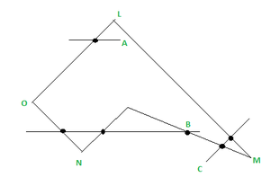
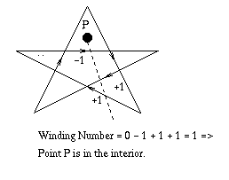

Principle: The Even-Odd Method, also known as the Ray Casting Algorithm, evaluates the number of intersections between a ray cast from the point and the edges of the polygon. If the number of intersections is odd, the point is inside the polygon; if it's even, the point is outside.
Applications: This method is widely used in graphic rendering engines for its simplicity and efficiency. It's employed in various applications, from computer-aided design to video game development, ensuring accurate rendering of complex shapes.
Principle: The Winding Number Method calculates the winding number of a point concerning the polygon. By analyzing the angle formed between the point and the polygon vertices, this method determines whether the point is inside or outside the polygon. A winding number of zero indicates the point is outside, while a non-zero value signifies the point is inside.
Applications: The Winding Number Method is particularly useful in applications requiring precise spatial analysis, such as geographical information systems and architectural design software. Its accuracy makes it a preferred choice for applications where precision is paramount.
